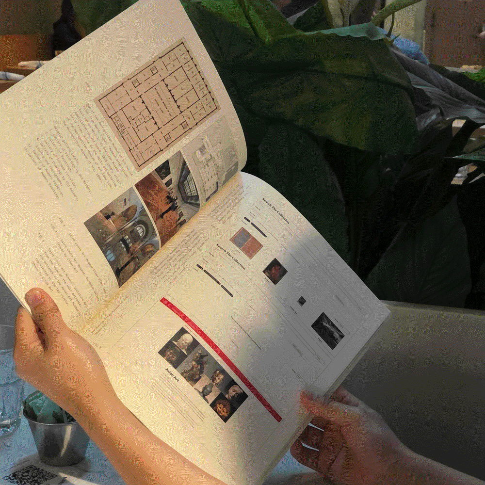
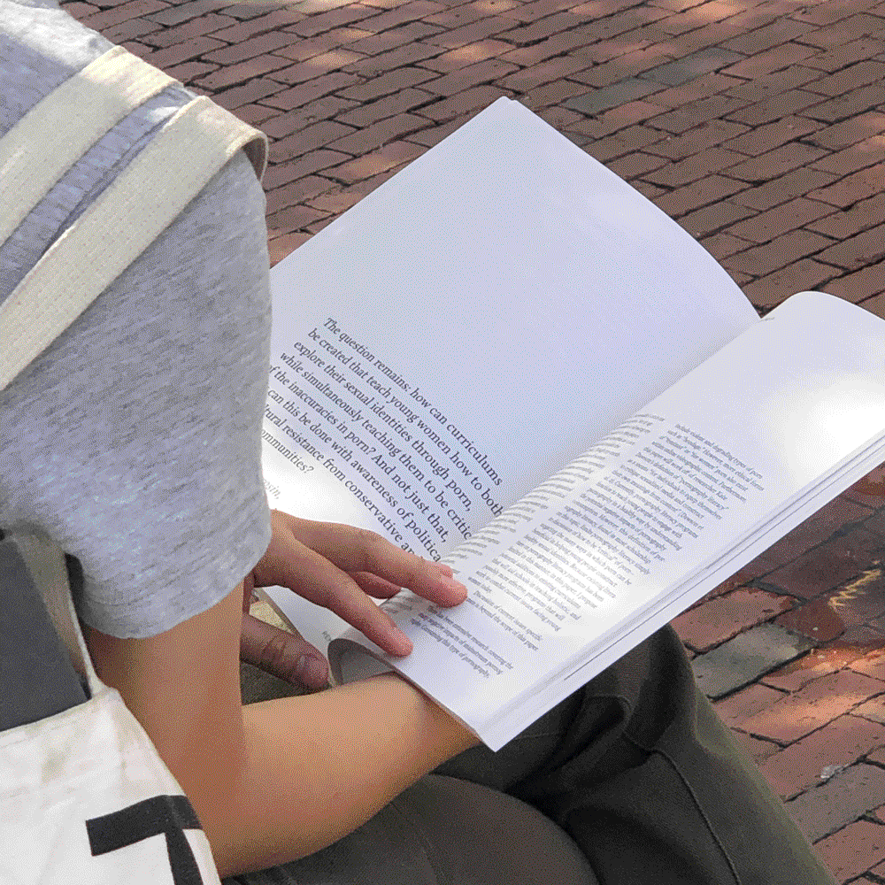
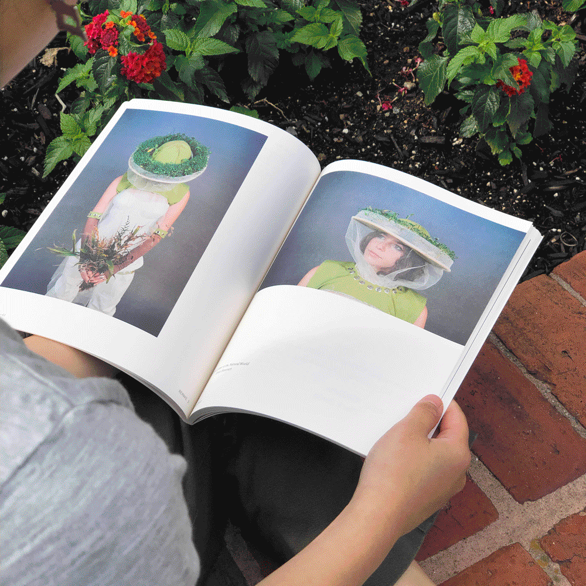
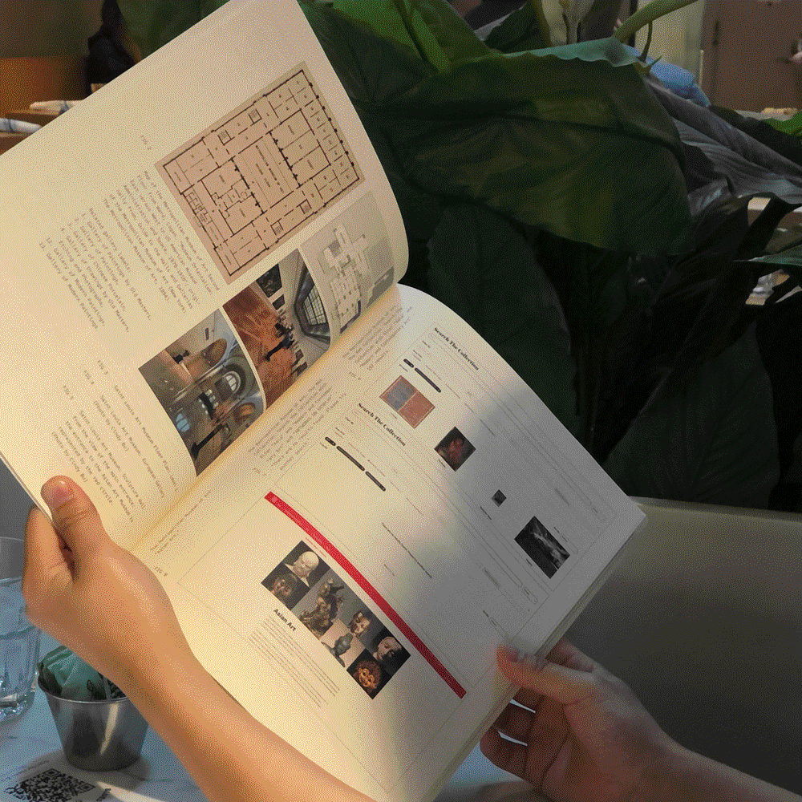
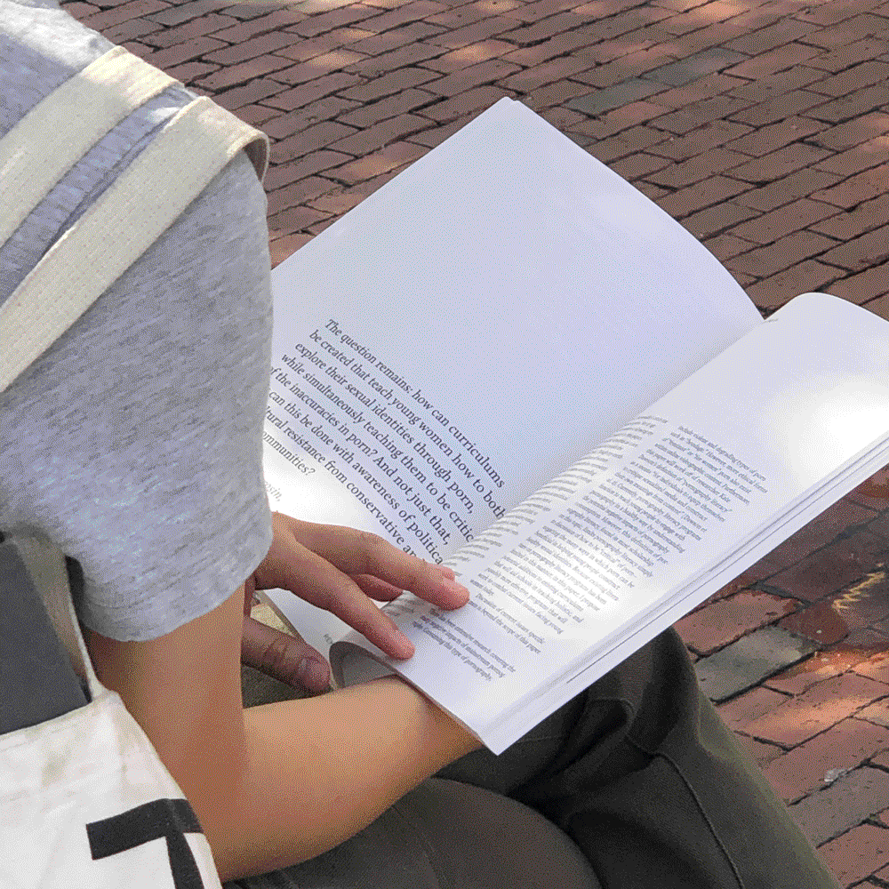
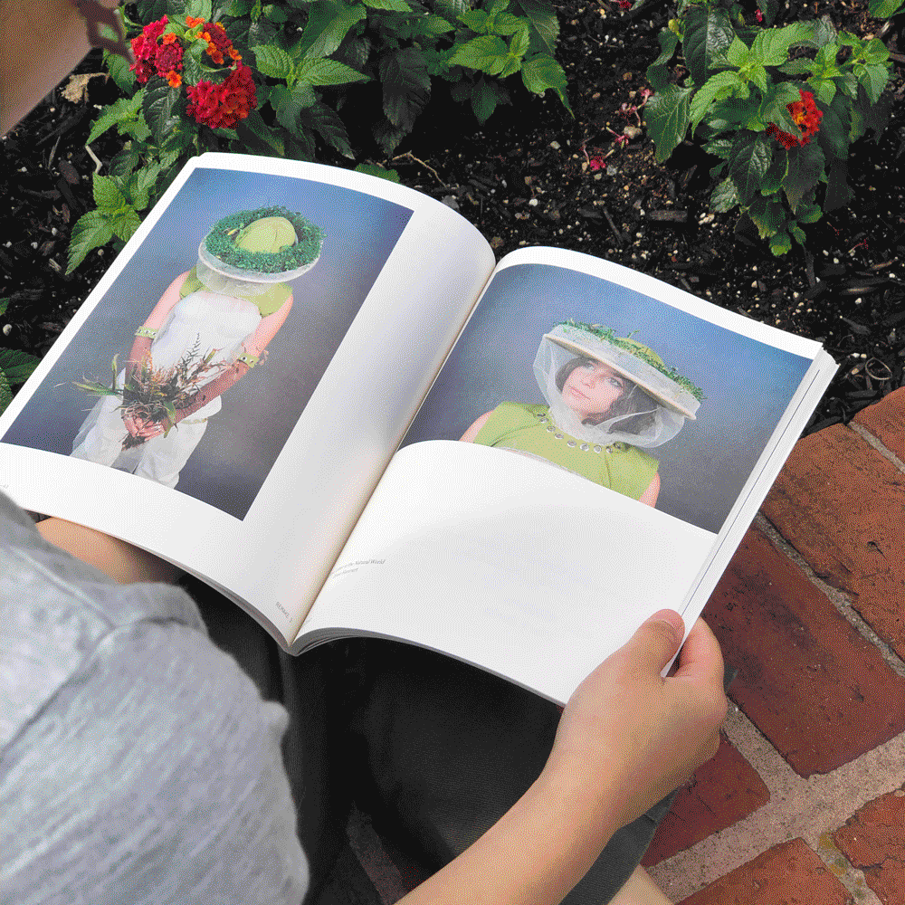

An annual journal celebrating first-year student work ranging from art and research to creative writing and interviews. A collaboration with the WUSTL Writing Department. Online Issue.
 





Summer 2022 (Issue 3)
8 × 10"